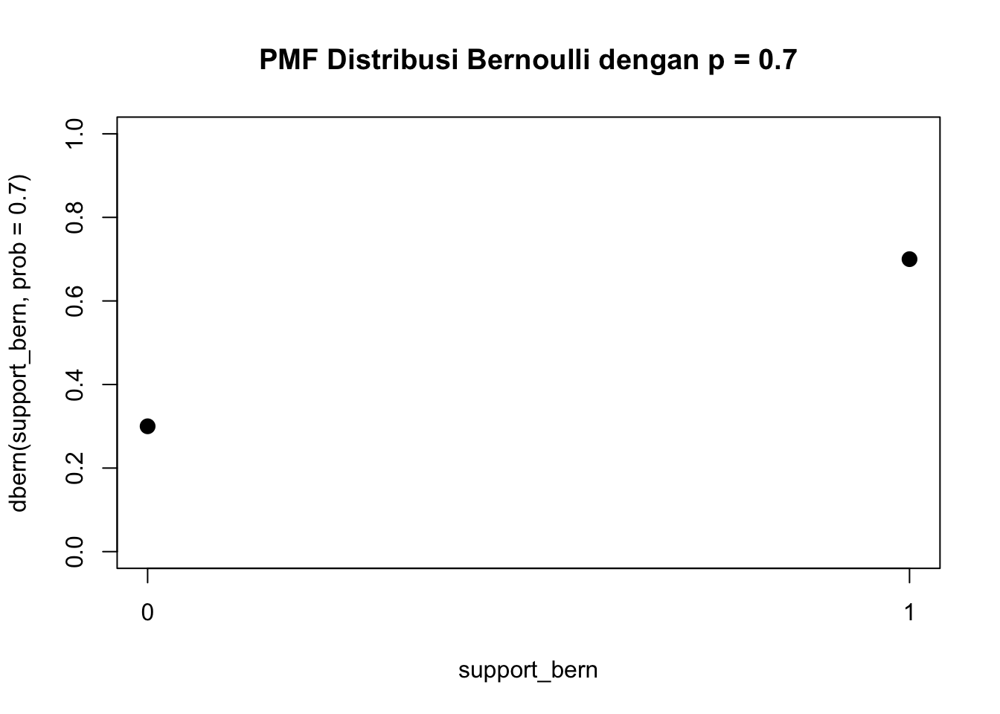
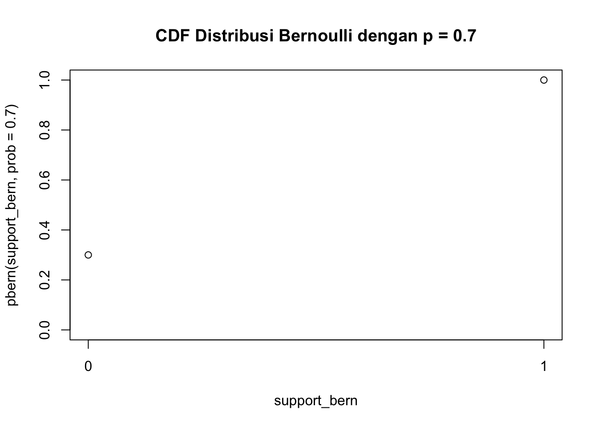
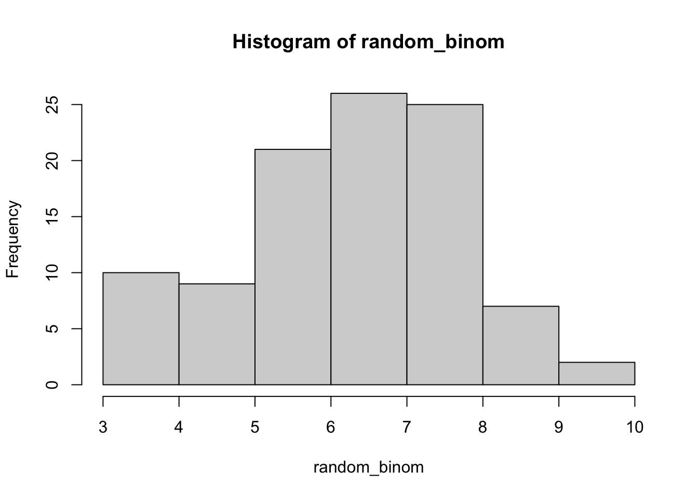
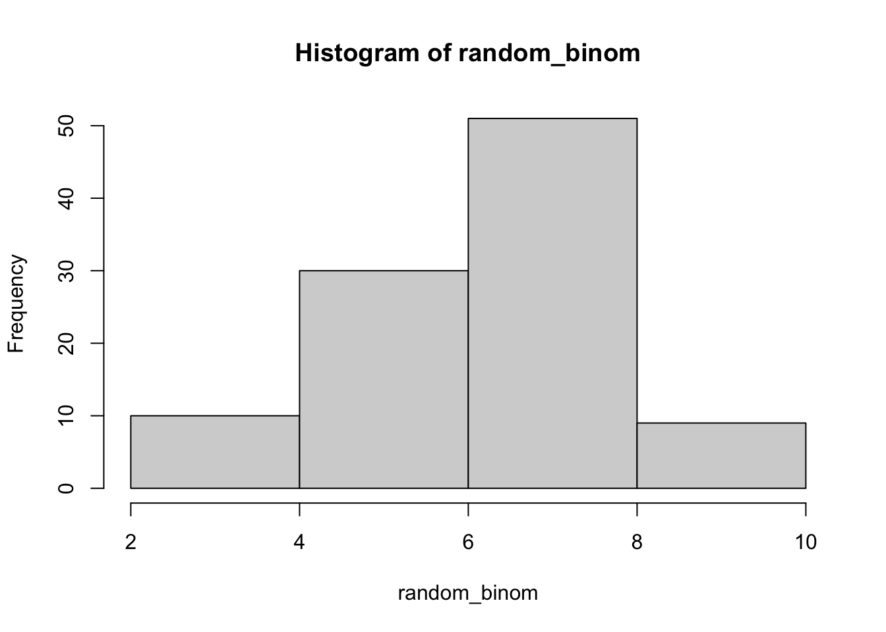
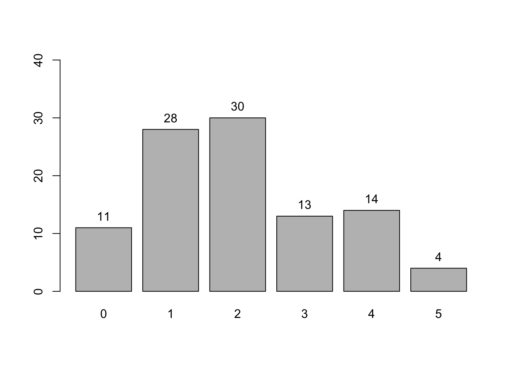
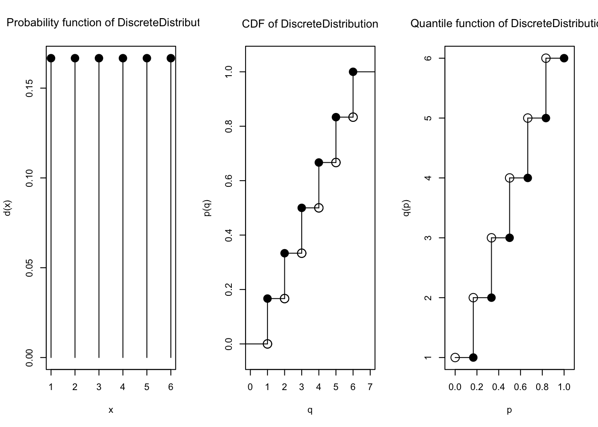
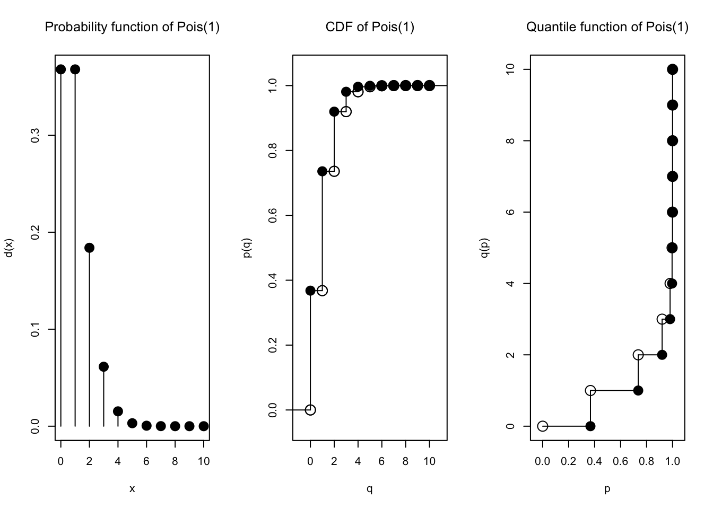
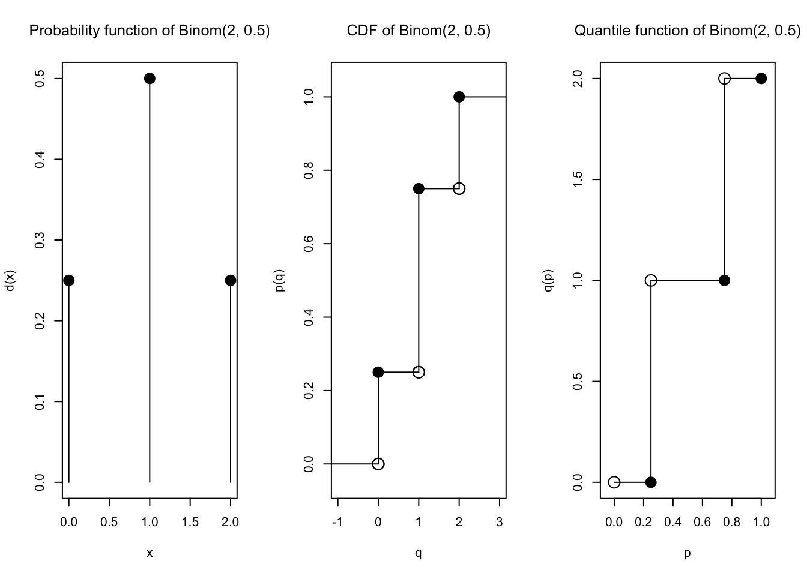
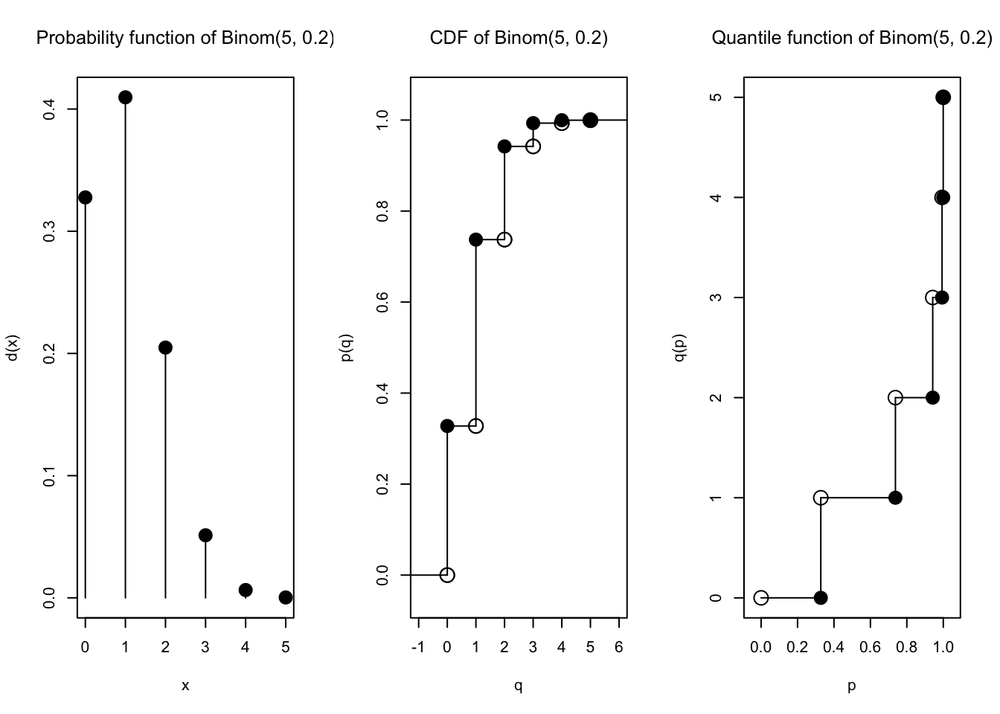

Selamat datang kembali di praktikum Pengantar Sains Data. Setelah sebelumnya membahas tentang serba-serbi visualisasi data, sekarang kita akan mulai membahas sejumlah bentuk distribusi probabilitas yang umum dikenal dan digunakan di dunia statistika, dimulai dari sejumlah distribusi diskrit.
Dalam suatu percobaan acak, tentu ada sejumlah hasil yang mungkin. Kita bisa memandang hasil-hasil yang mungkin tersebut sebagai nilai-nilai yang bisa dimiliki oleh suatu variabel acek (random variable), biasanya dilambangkan \(X\). Himpunan semua nilai yang mungkin disebut ruang sampel (sample space) untuk variabel acak tersebut.
Distribusi probabilitas (probability distribution) untuk suatu variabel acak mendata probabilitas atau peluang untuk tiap nilai di ruang sampel. Dari ruang sampel, kumpulan semua nilai yang memiliki probabilitas taknol disebut support dari distribusi tersebut.
Suatu ruang sampel disebut diskrit apabila banyaknya elemen bersifat terhitung (countable). Suatu distribusi disebut diskrit apabila variabel acak yang bersangkutan memiliki ruang sampel yang diskrit.
Serupa: suatu ruang sampel disebut kontinu apabila banyaknya elemen bersifat tak terhitung (uncountable), dan suatu distribusi disebut kontinu apabila variabel acak yang bersangkutan memiliki ruang sampel yang kontinu.
Banyak distribusi data cenderung mengikuti “jenis” atau “bentuk” yang sama, hanya berbeda dari segi beberapa “sifat” saja. Dari situlah muncul berbagai nama distribusi seperti binomial, uniform, Poisson, normal, dan seterusnya; itulah sejumlah “bentuk” distribusi yang umum dikenal, dan ada konsep “parameter” sebagai “sifat-sifat” yang bisa membedakan antar dua distribusi yang berbentuk mirip.
Beberapa distribusi diskrit adalah
distribusi Bernoulli
distribusi binomial
distribusi Poisson
distribusi uniform diskrit
dan tentunya, kita juga bisa membuat distribusi diskrit sendiri; tidak harus selalu beracuan pada bentuk-bentuk tersebut.
Distribusi Diskrit dengan base R
Fungsi d…, p…, q…, dan r…
Di kalangan R, sudah ada semacam standardisasi agar tiap distribusi (baik diskrit maupun kontinu) diwakili oleh empat fungsi, yang namanya berawalan d, berawalan p, berawalan q, dan berawalan r.
Fungsi berawalan d melambangkan density function, juga disebut PMF (probability mass function) untuk distribusi diskrit, atau PDF (probability density function) untuk distribusi kontinu
Fungsi ini menghitung probabilitas suatu variabel acak \(X\) memperoleh nilai sama dengan\(x\), yang bisa dirumuskan:
\[\text{Pr}\left\{ X=x \right\}\]
Note: terkadang, untuk distribusi diskrit pun, PMF juga disebut PDF
Fungsi berawalan p melambangkan (cumulative) probability function atau lebih umum disebut CDF (cumulative distribution function)
Fungsi ini menghitung probabilitas suatu variabel acak \(X\) memperoleh nilai kurang dari atau sama dengan\(x\), yang bisa dirumuskan:
\[\text{Pr}\left\{ X \leq x \right\}\]
Untuk distribusi diskrit, CDF bisa dihitung sebagai sumasi atau penjumlahan dari tiap nilai PMF hingga nilai \(x\) yang diminta.
Sedangkan, untuk distribusi kontinu, perhitungan CDF sebenarnya melibatkan integral hingga nilai \(x\) yang diminta. Itu akan kalian pelajari lebih lanjut di mata kuliah Statistika Matematika 1.
Sementara ini, ketika tidak bisa menghitung CDF dari sekadar sumasi nilai-nilai PMF, kalian bisa memperoleh nilai CDF dengan menggunakan fungsi p yang sesuai di R, yaitu menjadi topik pembahasan di praktikum kita, atau dengan memanfaatkan tabel CDF yang biasa tersedia di lampiran buku pengantar statistik seperti karangan Walpole.
Fungsi berawalan q melambangkan quantile function atau lebih umum disebut inverse CDF
Diketahui suatu probabilitas \(y\), fungsi ini menentukan nilai \(x\) yang membuat nilai CDF dari \(x\) sama dengan \(y\).
Lebih tepatnya, fungsi kuantil ini menentukan nilai \(x\) terkecil sedemikian sehingga nilai CDF paling tidak \(y\).
Fungsi berawalan r melambangkan RNG (random number generator), yang bisa menghasilkan sampel sejumlah data secara acak (random) dari distribusinya.
Untuk sejumlah distribusi yang umum dikenal, base R sudah menyediakan keempat fungsi tersebut. Kita akan lebih mengenal arti, maksud, dan cara menggunakan fungsi-fungsi tersebut seiring mengenal berbagai distribusi.
Distribusi Bernoulli
Khusus untuk distribusi Bernoulli, diperlukan packageRlab yang perlu di-instal terlebih dahulu kalau belum,
install.packages("Rlab")
dan perlu diaktifkan:
library("Rlab")
Rlab 4.0 attached.
Attaching package: 'Rlab'
The following objects are masked from 'package:stats':
dexp, dgamma, dweibull, pexp, pgamma, pweibull, qexp, qgamma,
qweibull, rexp, rgamma, rweibull
The following object is masked from 'package:datasets':
precip
Salah satu fenomena yang sangat umum terjadi di sekitar kita adalah ketika ada dua kemungkinan: gagal atau sukses. Mungkin saja, ada probabilitas yang tetap, misalnya probabilitas sukses. Fenomena seperti itulah yang digambarkan oleh distribusi Bernoulli. Apabila kita lambangkan gagal dengan angka 0 (nol) dan sukses dengan angka 1 (satu), jelas bahwa support untuk distribusi Bernoulli adalah \(\{0,1\}\).
Apabila kita amati fenomena tersebut terjadi berkali-kali, misal \(n\) kali, istilahnya adalah proses Bernoulli (Bernoulli process), dan tiap kali terjadi disebut Bernoulli trial. Hasil proses Bernoulli digambarkan oleh distribusi binomial. Dalam hal ini, kita biasa memperhatikan banyaknya kesuksesan dari \(n\) buah trial tersebut, sehingga support untuk distribusi binomial adalah \(\{0,1,2,\dots,n\}\).
Ketika kita ingin mengenali bahwa suatu fenomena tergolong proses Bernoulli, kita perlu terlebih dahulu menentukan: apa yang menjadi ukuran “sukses”, sedemikian sehingga selain itu dianggap “gagal”. Kemudian, kita perlu memperhatikan asumsi proses Bernoulli sebagai berikut:
Fenomena atau eksperimen tersebut terdiri dari beberapa kali trial, maksudnya terjadi beberapa kali.
Tiap hasil trial bisa tergolong “sukses” atau “gagal”.
Probabilitas sukses, biasa dilambangkan \(p\), nilainya tetap sama untuk tiap trial.
Semua trial saling bebas.
Probabilitas gagal biasa dilambangkan \(q\). Suatu kejadian bisa tergolong gagal ataupun sukses tetapi tidak keduanya, sehingga berlaku \(p+q=1\). Maka, \(q=1-p\).
Mari kita bahas kedua distribusi dengan satu contoh fenomena:
Suatu pabrik menjalani proses inspeksi hasil produknya. Diketahui bahwa 30% dari produk yang dihasilkan ternyata cacat.
Dua kalimat saja, kita sudah bisa mengenali fenomena tersebut sebagai proses Bernoulli.
Kita bisa anggap “produk cacat” sebagai kegagalan, sehingga “produk bagus / tidak cacat” dianggap kesuksesan.
Perhatikan bahwa 30% produk tergolong cacat, dan itu telah kita artikan sebagai kegagalan, sehingga bisa kita artikan bahwa 30% produk “gagal”. Sisanya adalah 70%, dan itu bisa kita artikan sebagai persentase produk “sukses”.
Kita bisa asumsikan bahwa pabrik tersebut memang biasanya begitu, bahwa memang 30% gagal, 70% sukses. Dengan demikian, persentase tersebut bisa kita artikan sebagai probabilitas. Sehingga, probabilitas produk sukses adalah 70% yaitu 0.7 dan probabilitas produk gagal adalah 30% yaitu 0.3
Oleh karena itu, fenomena tersebut bisa dimodelkan oleh distribusi Bernoulli dengan \(p = 0.7\). Jelas juga bahwa \(q = 0.3\)
Sekarang, kita bisa mencoba mempelajari lebih lanjut tentang fenomena tersebut melalui distribusi Bernoulli yang mewakilinya.
Apabila variabel acak untuk gagal atau sukses dilambangkan \(X\), kita bisa tulis bahwa \(X\) berdistribusi Bernoulli dengan probabilitas sukses \(p\), sebagai berikut:
\[X \sim \text{Bernoulli}(p)\]
Perhatikan bahwa distribusi Bernoulli hanya ditentukan oleh nilai \(p\). Nilai yang menentukan suatu bentuk distribusi, seperti \(p\) di sini, disebut parameter untuk bentuk distribusi tersebut. Jadi, distribusi Bernoulli hanya memiliki satu parameter, yaitu probabilitas sukses.
Untuk persoalan yang sedang kita pelajari, \(X \sim \text{Bernoulli}(0.7)\)
PMF
Ingat kembali bahwa PMF dari suatu distribusi diskrit adalah fungsi yang menunjukkan probabilitas suatu kejadian. Misalnya, untuk kejadian \(x\), nilai PMF di \(x\) adalah probabilitas bahwa \(x\) terjadi, atau bisa ditulis
\[\text{Pr}(X = x)\]
Untuk distribusi Bernoulli, hanya ada dua kemungkinan kejadian, yaitu nol (gagal) atau satu (sukses), bisa dilihat dari himpunan support\(\{0,1\}\). Artinya, nilai yang mungkin untuk variabel acak \(X\) hanyalah \(X=0\) dan \(X=1\).
Lagipula, kita sudah tahu bahwa probabilitas sukses adalah \(p\), sehingga nilai PMF di satu (yang diartikan sebagai kesuksesan) adalah probabilitas sukses,
\[\text{Pr}(X = 1) = p\]
dan nilai PMF di nol (yang diartikan sebagai kegagalan) adalah probabilias gagal, yaitu tidak sukses:
Kebetulan, R (melalui packageRlab) memfasilitasi fungsi PMF untuk distribusi Bernoulli, dinamakan dbern. Fungsi tersebut memerlukan input berupa kejadian \(x\) serta parameter prob yaitu \(p\), probabilitas sukses.
dbern(0, prob =0.7)
[1] 0.3
dbern(1, prob =0.7)
[1] 0.7
Apabila kita ingin plot PMF dengan cepat, kita bisa tulis kode seperti berikut:
Plot PMF memang seperti itu, hanya terdiri dari titik-titik saja, toh PMF memang untuk distribusi diskrit. Kebetulan, secara pemrograman, kita sedang menggambar scatter plot di base R.
Opsi ylim seperti itu dibutuhkan untuk memaksakan rentang sumbu \(y\) dari nol ke satu, karena secara umum, probabilitas bisa bernilai paling rendah nol dan paling tinggi satu.
Opsi xaxp menentukan pelabelan sumbu x, yaitu agar tick paling kiri adalah x1=0, tick paling kanan adalah x2=1, dan banyaknya interval di antara kedua ujung adalah n=1 (tiap interval dibatasi dua tick).
Sebenarnya, menulis xaxp = c(0, 1, 1) saja juga sudah cukup, tanpa menulis x1=, x2=, ataupun n=
Sebagaimana plot di base R pada umumnya, kita bisa menambahkan opsi-opsi lainnya agar lebih detail dan lebih bagus.
plot(support_bern,dbern(support_bern, prob =0.7),ylim =c(0, 1),xaxp =c(0, 1, 1),main ="PMF Distribusi Bernoulli dengan p = 0.7",pch =20,cex =2)

CDF
Ingat kembali bahwa untuk variabel acak \(X\), fungsi CDF menghitung
\[\text{Pr}(X \leq x)\]
Untuk distribusi Bernoulli, perhatikan bahwa nilai CDF di nol adalah
Kita gunakan dbern untuk PMF, sehingga kita gunakan pbern untuk CDF, sesuai pola penamaan d, p, q, r di R.
Sesuai sifat CDF untuk distribusi diskrit, nilai CDF bisa dihitung secara langsung (dengan pbern) ataupun melalui penjumlahan PMF (dengan dbern). Misalnya, untuk nol:
pbern(0, prob =0.7)
[1] 0.3
dbern(0, prob =0.7)
[1] 0.3
Sedangkan, untuk satu:
pbern(1, prob =0.7)
[1] 1
dbern(0, prob =0.7) +dbern(1, prob =0.7)
[1] 1
Fungsi CDF juga bisa digambar plot nya.
plot(support_bern,pbern(support_bern, prob =0.7),ylim =c(0, 1),xaxp =c(0, 1, 1),main ="CDF Distribusi Bernoulli dengan p = 0.7")

plot(support_bern,pbern(support_bern, prob =0.7),ylim =c(0, 1),xaxp =c(0, 1, 1),main ="CDF Distribusi Bernoulli dengan p = 0.7",pch =20,cex =2)
Quantile function
Ingat kembali bahwa, jika diberikan input misalnya \(y\), maka fungsi kuantil, atau fungsi inverse CDF, mencari nilai \(x\) terkecil sehingga nilai CDF minimal \(y\).
Untuk distribusi Bernoulli dengan \(p=0.7\), perhatikan bahwa
Sebagaimana yang sudah dijelaskan sebelumnya, distribusi binomial menggambarkan proses Bernoulli, yaitu percobaan gagal/sukses yang dilakukan berkali-kali, misalnya \(n\) kali.
Distribusi binomial memiliki dua parameter:
\(n\), yaitu banyaknya trial
\(p\), yaitu probabilitas sukses
Perhatikan bahwa distribusi Bernoulli memiliki satu parameter saja, yaitu \(p\), yang juga merupakan probabilitas sukses. Bahkan, distribusi binomial dengan \(n=1\) itu sama saja distribusi Bernoulli.
Apabila suatu variabel acak \(X\) berdistribusi binomial, biasa digunakan notasi
\[X \sim \text{Binomial}(n,p)\]
yang terkadang disingkat \(X \sim \text{Binom}(n,p)\) atau \(X \sim \text{Bin}(n,p)\) atau bahkan \(X \sim \text{B}(n,p)\).
PMF
PMF untuk distribusi \(\text{Binomial}(n,p)\) adalah
yang berlaku untuk perhitungan PMF di tiap nilai \(x\) di ruang sampel, yaitu untuk tiap \(x \in \{0,1,2,\dots,n\}\).
PMF ini bisa dihitung dengan fungsi dbinom yang langsung tersedia dari R (bahkan tanpa packageRlab). Input yang diterima oleh dbinom adalah nilai \(x\) yang ingin dihitung PMF nya, diikuti kedua parameter distribusi binomial, yaitu size atau \(n\), dan prob atau \(p\).
Melanjutkan contoh inspeksi produk tadi, berikut ini kita menghitung probabilitas bahwa, dari hasil inspeksi \(n=10\) buah produk, terdapat tepat dua produk yang bagus (sehingga tepat delapan produk cacat).
dbinom(2,size =10,prob =0.7)
[1] 0.001446701
Dalam hal ini, kita menghitung \(\text{Pr}(X=2)\) ketika \(X \sim \text{Binomial}(10, 0.7)\).
Masih dengan hasil inspeksi \(n=10\) buah produk dan probabilitas sukses \(p=0.7\), berikut ini kita hitung probabilitas bahwa paling banyak dua produk yang bagus. Kita bisa menggunakan CDF, karena memang gunanya untuk itu,
pbinom(2, size =10, prob =0.7)
[1] 0.001590386
atau kita juga bisa menghitung PMF di 0, 1, dan 2, lalu menjumlahkannya,
karena PMF adalah probabilitas di nilai tertentu saja, dan kita ingin menghitung probabilitas nilainya paling besar dua, yang ada tiga kemungkinan yaitu nilainya tepat nol, tepat satu, dan tepat dua.
Seperti distribusi Bernoulli tadi, kita bisa membuat bar plot menggunakan base R, dengan terlebih dahulu membentuk tabel frekuensi, barulah membuat bar plot frekuensi dengan tiap bar mewakili satu nilai:
Daripada membuat bar plot, kita juga bisa membuat histogram, langsung menggunakan data aslinya daripada menggunakan tabel frekuensi, seperti berikut.
hist(random_binom)

Tentunya, kita juga bisa mengatur hist dengan berbagai opsi, sebagaimana di Modul 3 PSD tahun 2024 ini ketika mempelajari fitur plotting di base R.
hist(random_binom,breaks =4)

hist(random_binom,breaks =4,main ="Histogram 100 sampel dari Binom(10, 0.7)",xlab ="Nilai X",ylab ="Banyaknya sampel",col ="blue")

Sebenarnya, bar plot juga sudah termasuk histogram, sehingga tidak masalah apabila kalian membuat bar plot saja, apalagi untuk distribusi Bernoulli.
Contoh soal distribusi binomial
Suatu ujian yang terdiri dari 15 pertanyaan pilihan berganda, masing-masing memiliki 5 kemungkinan jawaban dan hanya satu yang benar. Hitunglah berapa probabilitas seseorang yang menjawab secara menebak-nebak akan memperoleh
5 sampai 10 jawaban yang benar
Antara 5 sampai 10 jawaban yang benar
4 jawaban yang benar
Lebih dari 5 jawaban yang benar
Jawab
Variabel acak \(X\) menyatakan banyaknya jawaban yang benar.
Perhatikan bahwa \(X\) berdistribusi binomial dengan \(n=15\) dan \(p=\frac{1}{5}=0.2\)
Sebelumnya, kita telah membahas bagaimana fenomena kejadian gagal/sukses bisa dipelajari melalui distribusi Bernoulli dan distribusi binomial.
Kali ini, kita akan membahas distribusi Poisson, yang biasa memodelkan banyaknya kemunculan sesuatu dalam suatu rentang waktu. Contohnya, distribusi Poisson bisa memodelkan
banyaknya telpon masuk per jam di layanan customer service,
banyaknya tanggal merah tiap semester, dan
banyaknya kedatangan orang ke suatu acara tiap menit.
Menariknya, distribusi Poisson hanya memiliki satu parameter saja, yaitu lambda atau \(\lambda\), melambangkan rata-rata kemunculannya per satuan waktu.
Apabila suatu variabel acak \(X\) berdistribusi Poisson, biasa ditulis
\[X \sim \text{Poisson}(\lambda)\]
atau terkadang disingkat \(X \sim \text{Pois}(\lambda)\).
Variabel acak \(X\) dalam hal ini melambangkan banyaknya kemunculan tersebut. Sehingga, ketika kita menuliskan misalnya
\[\text{Pr}(X=3)\]
artinya adalah probabilitas kemunculan tepat tiga kali di suatu satuan waktu, misalnya di satu jam, di satu semester, di satu menit, atau satuan waktu lainnya, tergantung konteks permasalahan (lebih tepatnya tergantung satuan si \(\lambda\)).
Ingat bahwa bar plot sebenarnya sudah termasuk histogram.
(Pengayaan) Visualisasi Distribusi Diskrit dengan ggplot2
(work in progress)
Distribusi Diskrit dengan distr
Ada suatu package bernama distr yang menawarkan pendekatan agak berbeda daripada base R dalam hal distribusi. Daripada fungsi-fungsi terpisah untuk tiap kemungkinan awaland…, p…, q…, dan r… sebagaimana di base R, kita malah bisa membuat suatu “benda” atau “objek” distribusi, yang kemudian bisa diterapkan keempat fungsi satu huruf berikut: d, p, q, dan r.
Bahkan, dengan pendekatan ini, kita bisa dengan cukup mudah membuat distribusi kita sendiri.
Seperti biasa, silakan instal terlebih dahulu packagedistr apabila belum,
install.packages("distr")
kemudian jangan lupa aktifkan:
library("distr")
Loading required package: startupmsg
Utilities for Start-Up Messages (version 0.9.7)
For more information see ?"startupmsg", NEWS("startupmsg")
Loading required package: sfsmisc
Object Oriented Implementation of Distributions (version 2.9.2)
Attention: Arithmetics on distribution objects are understood as operations on corresponding random variables (r.v.s); see distrARITH().
Some functions from package 'stats' are intentionally masked ---see distrMASK().
Note that global options are controlled by distroptions() ---c.f. ?"distroptions".
For more information see ?"distr", NEWS("distr"), as well as
http://distr.r-forge.r-project.org/
Package "distrDoc" provides a vignette to this package as well as to several extension packages; try vignette("distr").
Attaching package: 'distr'
The following objects are masked from 'package:stats':
df, qqplot, sd
Note: Packages "e1071", "moments", "fBasics" should be attached /before/ package "distrEx". See distrExMASK().Note: Extreme value distribution functionality has been moved to
package "RobExtremes". See distrExMOVED().
For more information see ?"distrEx", NEWS("distrEx"), as well as
http://distr.r-forge.r-project.org/
Package "distrDoc" provides a vignette to this package as well as to several related packages; try vignette("distr").
Attaching package: 'distrEx'
The following objects are masked from 'package:stats':
IQR, mad, median, var
Umum dibahas dalam pengantar statistik adalah probabilitas dadu. Jelas, dadu dengan 6 (enam) sisi memiliki probabilitas \(\frac{1}{6}\) untuk kemunculan tiap angka 1, 2, 3, 4, 5, 6. Perhatikan bahwa support dalam hal ini adalah \(\{1,2,3,4,5,6\}\), yang terdiri dari 6 elemen. Probabilitas \(\frac{1}{6}\) ini sama atau seragam, dan distribusi yang bersangkutan disebut distribusi uniform diskrit.
Distribusi uniform diskrit memiliki satu parameter saja, yaitu \(k\), banyaknya elemen di support. PMFnya bisa ditulis
\[\text{Pr}(X=x) = \begin{cases}
\frac{1}{k} & x \in \text{ support} \\
0 & x \text{ lainnya}
\end{cases}\]
dan CDF bisa dihitung dari penjumlahan PMF hingga \(x\) yang diminta.
Cara membuat distribusi uniform diskrit dengan distr agak manual, tetapi tidak sulit. Intinya membuat distribusi sendiri, tetapi tiap nilai di support (misal terdiri dari \(k\) elemen) memiliki probabilitas yang sama yaitu \(\frac{1}{k}\), sehingga jumlah semua probabilitasnya adalah satu (berdasarkan sifat probabilitas).
Istilah uniform atau “seragam” di sini artinya kesamaan probabilitas untuk tiap nilai di support.
supp5 <-c(1, 2, 3, 4, 5, 6)k <-length(supp5)prob5 <-rep(1/k, k) # 1/k sebanyak k kalidist5 <-DiscreteDistribution(supp5, prob5)
plot(dist5)
Semua nilai PMF sama:
d(dist5)(1)
[1] 0.1666667
d(dist5)(2)
[1] 0.1666667
d(dist5)(3)
[1] 0.1666667
d(dist5)(4)
[1] 0.1666667
d(dist5)(5)
[1] 0.1666667
d(dist5)(6)
[1] 0.1666667
Nilai CDF terlihat kumulatif terus bertambah:
p(dist5)(1)
[1] 0.1666667
p(dist5)(2)
[1] 0.3333333
p(dist5)(3)
[1] 0.5
p(dist5)(4)
[1] 0.6666667
p(dist5)(5)
[1] 0.8333333
p(dist5)(6)
[1] 1
Fungsi kuantil atau inverse CDF juga bisa dihitung:
q(dist5)(1/6)
[1] 1
q(dist5)(2/6)
[1] 2
q(dist5)(3/6)
[1] 3
q(dist5)(4/6)
[1] 4
q(dist5)(5/6)
[1] 5
q(dist5)(1)
[1] 6
Kita juga bisa membangkitkan n data random dari distribusi uniform diskrit
Dengan demikian, dist6 sekarang bisa di-plot ataupun diterapkan fungsi d, p, q, dan r seperti biasa, juga dihitung ekspektasi dan variansinya.
plot(dist6)

d(dist6)(4)
[1] 0.1666667
p(dist6)(4)
[1] 0.6666667
E(dist6)
[1] 3.5
var(dist6)
[1] 2.916667
Kekonvergenan distribusi binomial ke distribusi Poisson
Misalkan kita punya distribusi \(\text{Binomial}(n,p)\) dan distribusi \(\text{Poisson}(\lambda)\).
Misalkan pula, ternyata \(\lambda = np\). Yaitu, rata-rata dari distribusi binomial tersebut sama dengan rata-rata dari distribusi Poisson tersebut.
Kita pilih saja, misalnya \(\lambda = 1\) dan \(n=2\) sehingga \(p=\frac{1}{2}\). Mari kita plot keduanya:
plot(Pois(1))

plot(Binom(size =2, prob =1/2))

Sangat berbeda, ya! Tapi ternyata, jika \(n \to \infty\) dan \(p \to 0\) dengan tetap mempertahankan \(\lambda = np\), maka bentuk (PMF) distribusi \(\text{Binomial}(n,p)\) akan konvergen ke bentuk (PMF) distribusi \(\text{Poisson}(\lambda)\).
Mari kita lihat. Kita perlukan \(\lambda = np\), dengan \(\lambda\) tetap (misalnya 1), dan kita akan terus membesarkan \(n\), maka nilai \(p\) akan menyesuaikan yaitu \(p = \frac{\lambda}{n}\).
Kita coba buat \(n\) makin besar, dan nilai \(p\) selalu menyesuaikan yaitu \(p = \frac{\lambda}{n}\). Kita coba plot terus…
plot(Binom(size =3, prob =1/3))
plot(Binom(size =5, prob =1/5))

plot(Binom(size =10, prob =1/10))
plot(Binom(size =20, prob =1/20))
Wow! Mari kita bandingkan lagi dengan \(\text{Poisson}(\lambda)\):
plot(Pois(1))
Sangat mirip, ya! Kalian bisa mencoba hal yang sama dengan nilai \(\lambda\) yang lain, terus membesarkan \(n\), nilai \(p\) selalu menyesuaikan yaitu \(p = \frac{\lambda}{n}\), dan pada akhirnya, akan terlihat juga bahwa bentuk PMF \(\text{Binomial}(n,p)\) konvergen ke bentuk PMF \(\text{Poisson}(\lambda)\).